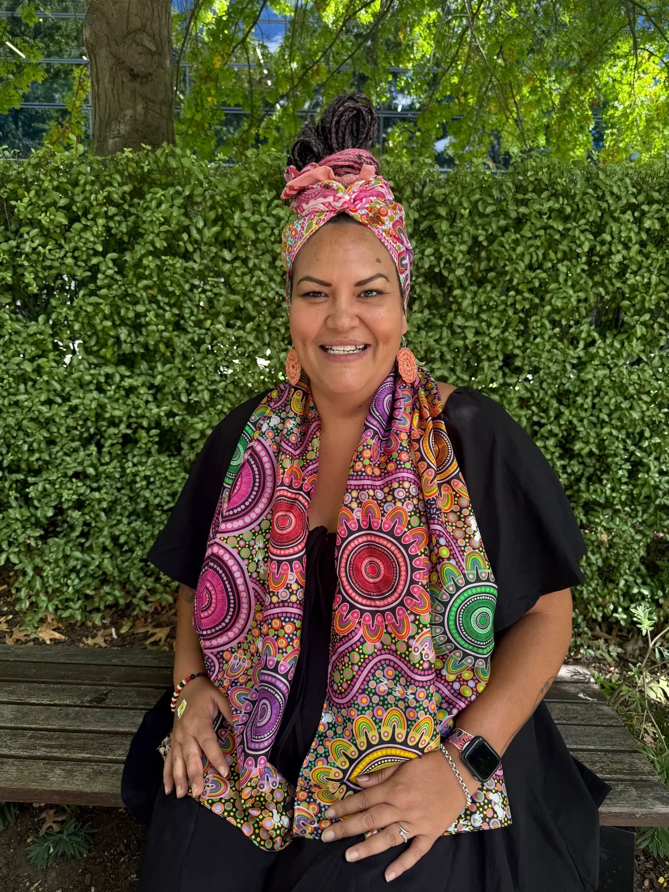
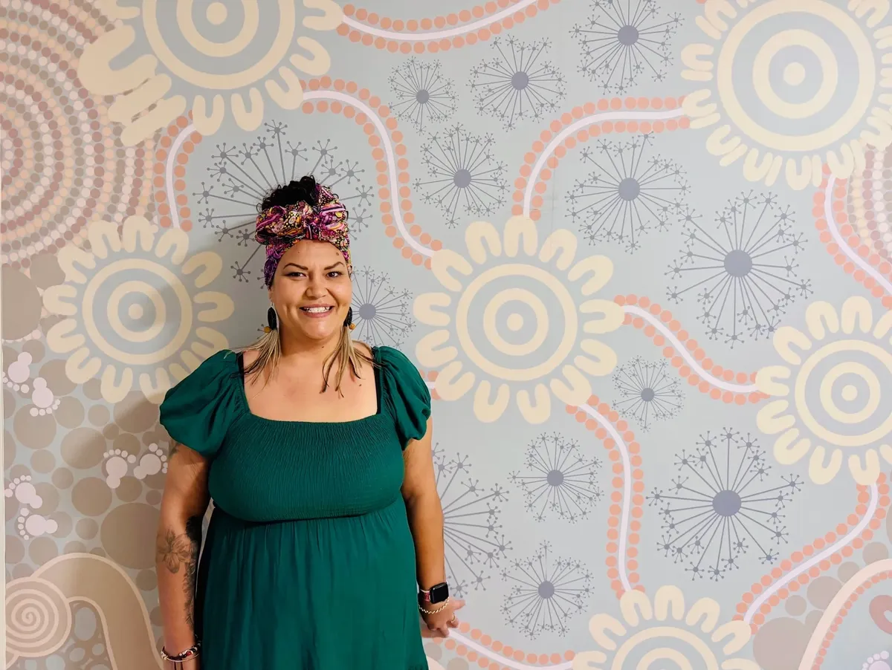

Ngunnawal & Wiradjuri · Dharawal Country, Wollongong NSW
Yuma/Yaama! LaToya creates contemporary Aboriginal art that brings culture, story and connection into workplaces, community spaces, public projects and personal commissions.

My name is LaToya and I’m a proud Ngunnawal and Wiradjuri woman. My grandmother is Ngunnawal from Yass, and my grandfather is Wiradjuri from Cowra, both small country towns in Central West NSW.
I was born on Wiradjuri Country in Cowra, grew up on Ngunnawal Country in Canberra, and I now reside on beautiful Dharawal Country in Wollongong NSW. My connections extend across Wiradjuri, Ngunnawal and Dharawal Countries.
Born on Country in Cowra, with family connection through my grandfather.
Raised on Ngunnawal Country, with family connection through my grandmother from Yass.
Now living and creating on Dharawal Country in Wollongong.
Art becomes a way to share culture, build connection and make a place feel like it holds story.
My work is deeply rooted in culture, storytelling and connection. Through art, I honour the relationships I hold with my Country, land and community, and express the respect I carry for our traditions, knowledge and heritage.
Each piece is a reflection of my continuing cultural journey: an exploration of identity, resilience and belonging. I draw inspiration from my surroundings, recreating elements of Country and telling stories through symbolic representation.
I also draw inspiration from my ancestors who have walked this land before us, and who have managed and maintained this land for tens of thousands of years.
LaToya works across original commissions, digital designs, workshops and custom pieces, shaping each project around meaning, audience and place.
Custom paintings and artwork developed around story, space and purpose.
Reconciliation Action Plan artwork, organisational branding and designs for significant Indigenous dates.
Cultural art workshops that invite teams and communities to learn through symbol, story and hands-on making.
Personalised shoes, handbags, name signs, clocks, platter boards and keepsakes.

Commission artworks created for Reconciliation Action Plan designs, helping organisations carry story through their reconciliation work.
Artwork for organisational branding and marketing connected to NAIDOC and other significant Indigenous dates.
Two designs created and used as vinyl murals in the Maternity Unit at The Canberra Hospital.
Whether the artwork is for a RAP, public space, workshop, campaign or personal commission, the process begins with listening.
Understand the purpose, audience, story, timeline and where the artwork will live.
Develop a direction that feels meaningful, culturally considered and suited to the project.
Paint or design the artwork with care, detail and respect for the story it carries.
Support the artwork as it becomes part of a space, brand, campaign, workshop or keepsake.
The work is visually strong, but the deeper value is the way it helps people connect with story, Country and each other.
Story and symbol shared with pride, care and respect.
Artwork that links people, place, family and community.
Pieces that help spaces feel welcoming and meaningful.
Creative outcomes made for real use, not just decoration.
Commissioned paintings, RAP artwork, murals, workshops, digital designs and personalised pieces created with meaning, culture and care.
Start an enquiry